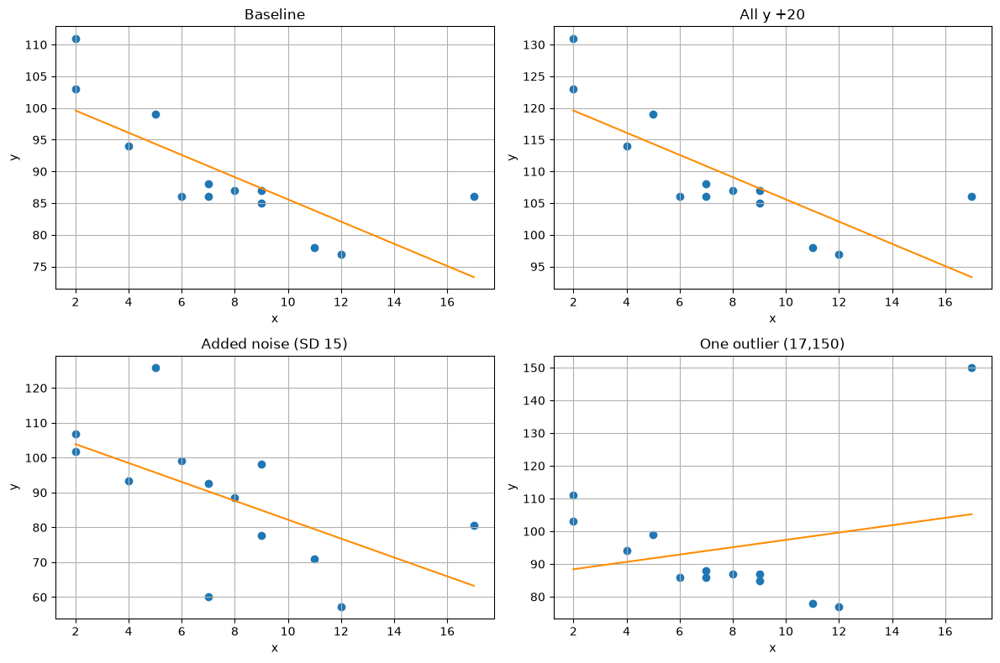

The Activity
Unit 3 · Run 28 October 2026 · Tutor: Dr Elizabeth Oladapo · Evidences learning outcome 2
Activity guidance: run the four supplied notebooks, covariance and Pearson correlation, simple linear, multiple linear and polynomial regression, and change variables to observe how a change in the data points affects correlation and regression.
Findings
| Exercise (n) | Change | Result |
|---|---|---|
| Correlation (1,000) | Noise SD from 10 to 40 | r fell from 0.888 to 0.446; covariance barely moved, 389.75 to 403.02. |
| Correlation (1,000) | y + 500; y × 10 | r unchanged in both; covariance unchanged, then multiplied by 10. |
| Simple regression (13) | One point moved from (17, 86) to (17, 150) | Slope reversed from −1.75 to +1.12; R² fell from 0.58 to 0.06. |
| Multiple regression (36) | Lightest car’s CO₂ + 50 g/km, refit | Weight coefficient from +0.0076 to −0.0046 g/km per kg. Both supplied prediction cases weigh more than the heaviest observed car (1,746 kg). |
| Polynomial (18) | Degree 6 against the cubic | Training R² 0.980 against 0.943, yet leave-one-out RMSE 6.38 against 4.23: the cubic predicts better. |

The sign reversals came from single edge points: one outlier, one CO₂ value. A model this sensitive should state its observed range and validation error, not its fit, before use. Two notebooks failed as supplied, one calling an undefined name and one expecting a missing file, yet both held saved outputs; no output counts until a clean rerun. The substituted cars data are W3Schools’ teaching example, reusable for non-profit teaching but ‘for testing purposes only’ (W3Schools, no date a, b).
Evidence
I ran the notebook on my own computer. Its first code cell records the run, and all 7 code cells completed without errors:
Run by Anne Dayer (student 39359) on my computer on 28 October 2026 at 16:49 UTCAI Acknowledgement
Codex was used to assist in identifying appropriate code solutions and to proofread and refine the code I produced. Claude and Grammarly supported proofreading, language refinement, and formatting of my written text. All final decisions, analyses, interpretations, conclusions, and recommendations are my own.
References
W3Schools (no date a) Python Machine Learning Multiple Regression: data.csv [Dataset]. Available at: https://www.w3schools.com/python/python_ml_multiple_regression.asp (Accessed: 22 October 2026).
W3Schools (no date b) About Terms of Service. Available at: https://www.w3schools.com/about/about_copyright.asp (Accessed: 22 October 2026).